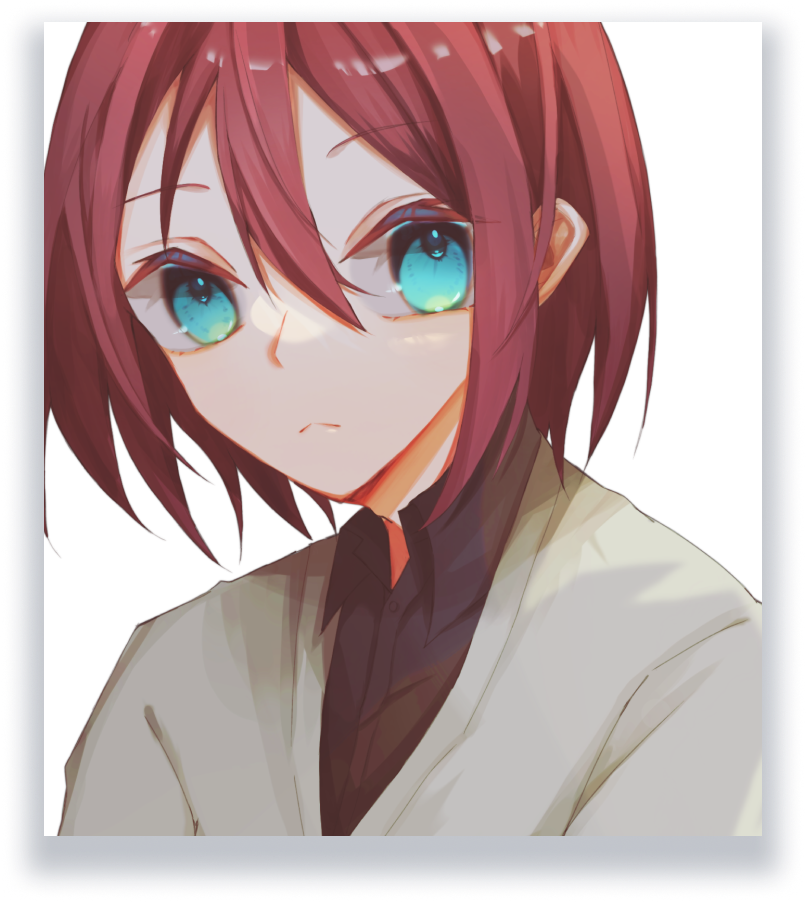
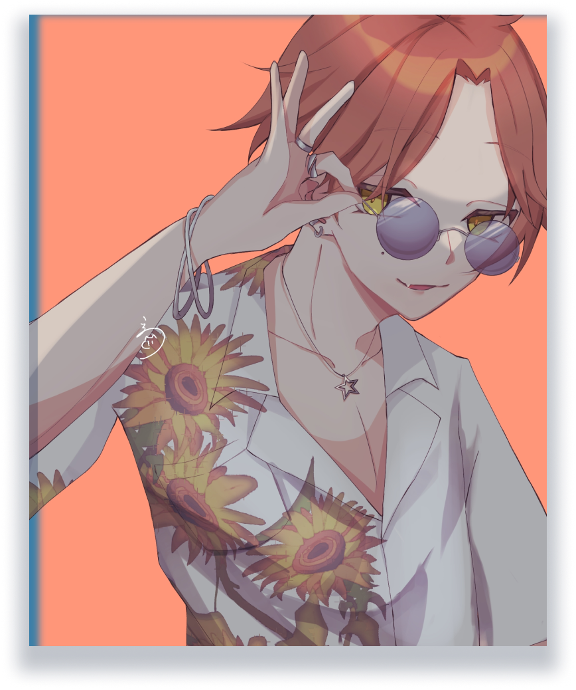
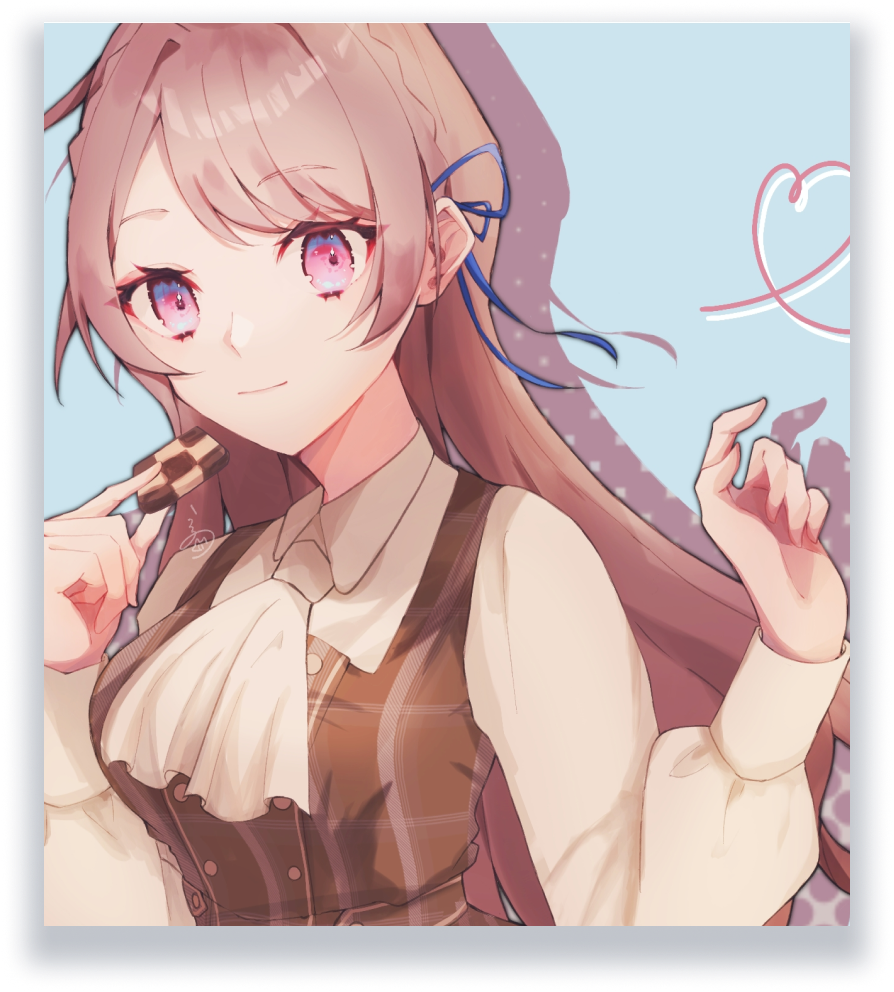

中性的なキャラクター。特に塗りにこだわり、大きな目のツヤ感や髪の毛束を意識。目は水色だけでなく、ハイライトに黄色を使い、描き込みを増やすことで情報量を増やし、視線が目に行くようにした。髪の毛はまとまった束間と奥行きに注意して描き、透明感を出せるようにした。
ひまわりと星の絵文字をイメージに制作。ひまわりは素材を使いながらも加工を駆使して自然な服の模様に見えるようにした。シルバーアクセサリーの収集が趣味、という設定のキャラクター。サングラスや大きく開いたシャツ、上げた前髪など、軽薄そうなイメージを多く詰め込んだ。


チェッカークッキーをモチーフに制作。目の綺麗さと服の生地の柔らかさを重視した。チェッカークッキーということでそのままチェック柄の服を採用し、リボンや服などでお嬢様のようなイメージを想起させるようにした。目はピンク色だけでなく青色をアクセントに使うことで情報量を増やした。
三人それぞれ違う塗り方に挑戦し、自分の絵柄の探究をしている。どれも目や肌は特にこだわっており、目は状況に応じて描き込み量を変え、肌は自然な血色感が出るようにしている。